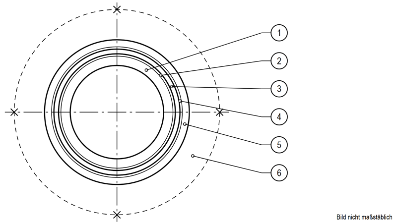
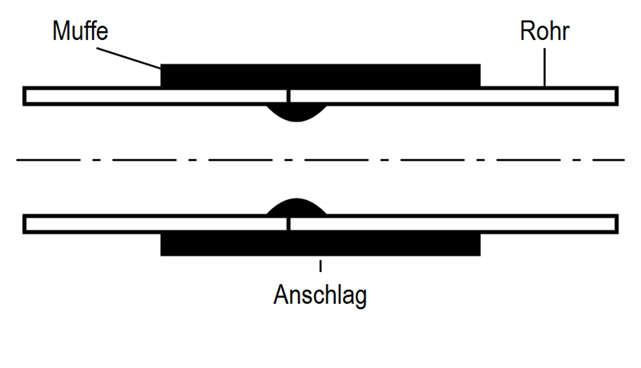
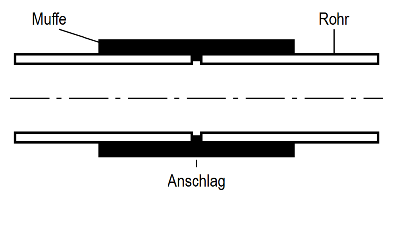
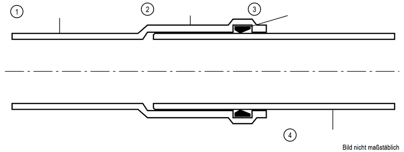
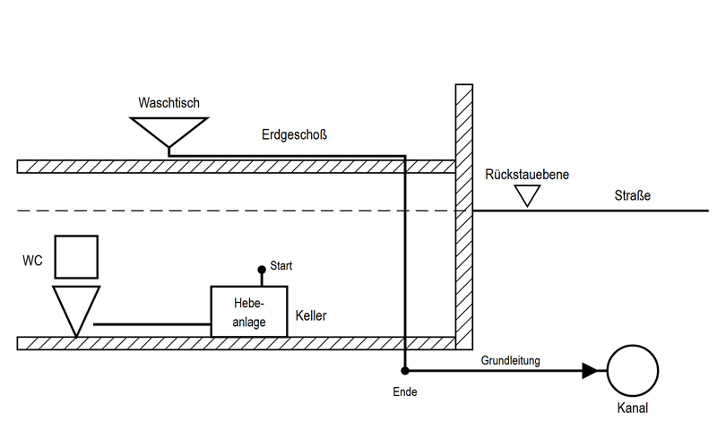

Mehrschichtverbund, PP, Abfluss
Heute lernst du: wie ein Mehrschichtverbundrohr aufgebaut ist und wie man es verbindet, was ein PP-Rohr kann, wie man PP verschweißt und was ein Abflussrohr können muss.
So arbeitest du: Lies zuerst den grauen Infokasten. Mach dann die Aufgaben darunter. Die Antworten findest du im Infokasten. Fertig? Tippe bei jeder Aufgabe auf „Prüfen“. Bessere deine Fehler aus.
„Mehr wissen ★★★“: erweiterte Aufgabenstellungen.
Infokasten A: Woraus besteht das Rohr? (Aufbau vom Mehrschichtverbundrohr)
Merke: Das Aluminium macht das Rohr sauerstoffdicht und stabil. |
Aufgabe 1 ★ leicht – Richtig oder falsch?
Lies Infokasten A. Kreuze an: richtig (R) oder falsch (F).
| Satz | R | F |
|---|---|---|
| Ein MSV-Rohr ist ganz aus Aluminium. | ||
| Die Innenschicht ist aus Kunststoff (PE). | ||
| Der Haftvermittler ist ein Klebstoff. | ||
| Ein MSV-Rohr nimmt man nur für Abwasser. |
Infokasten A2: Welche Schichten hat das Rohr? (Schichtaufbau)
|
Die Schichten von innen nach außen:
Merke: Innen und außen Kunststoff, in der Mitte Aluminium. |
Aufgabe 2 ★★ mittel – Die Schichten vom MSV-Rohr
Das Bild zeigt ein MSV-Rohr im Querschnitt (quer durchgeschnitten).

Lies Infokasten A2. Welche Schicht hat welche Nummer? Tipp den Buchstaben ein.
A Außenschicht – B Dichtring – C Haftvermittler – D Innenschicht – E Isolierung (Dämmung) – F Stabilisationsrohr (Aluminium)
Achtung: Ein Buchstabe kommt 2-mal vor, 1 bleibt übrig.
| Nr. | Buchstabe |
|---|---|
| 1 | |
| 2 | |
| 3 | |
| 4 | |
| 5 | |
| 6 |
Aufgabe 3 ★ leicht – Kunststoff oder Aluminium?
Lies Infokasten A. Welche Schicht bringt diesen Vorteil? Kreuze in jeder Zeile 1 Kästchen an.
| Vorteil | Kunststoff | Aluminium |
|---|---|---|
| glatte Innenwand | ||
| kein Sauerstoff kommt durch die Wand | ||
| die Außenschicht hält UV-Licht aus | ||
| das Rohr bleibt in Form | ||
| geringe Wärmeausdehnung |
Ein PE-Rohr darf nicht in die Heizung. Ein MSV-Rohr schon. Warum? Kreuze an.
| Das MSV-Rohr ist billiger. | |
| Das MSV-Rohr hat eine Aluminiumschicht. Sie lässt keinen Sauerstoff durch. | |
| Das MSV-Rohr ist innen aus Kupfer. |
Infokasten B: Wie verbindet man MSV-Rohre? (Verbindungstechnik)
Wichtige Begriffe bei Pressfittings:
So machst du eine Pressverbindung: 1. Rohr rechtwinklig ablängen (Rohrabschneider). 2. Rohrende kalibrieren und innen entgraten (Kalibrierwerkzeug). 3. Einstecktiefe am Rohr markieren. 4. Rohr bis zur Markierung in den Fitting stecken. 5. Pressbacke ansetzen und pressen. Merke: Pressen, Stecken oder Euroverschraubung. Unverpresst = undicht. |
Aufgabe 4 ★ leicht – Welche Verbindung passt?
Lies Infokasten B. Welche Verbindung passt? Kreuze in jeder Zeile 1 Kästchen an.
| Das macht der Monteur | Pressen | Stecken | Euro |
|---|---|---|---|
| Er steckt das Rohr nur hinein. | |||
| Er schließt das Rohr am Heizkreisverteiler an. Später will er es wieder lösen können. | |||
| Er nimmt die Pressmaschine. | |||
| Er verlegt eine Druckluftleitung in der Werkstatt. |
Aufgabe 5 ★ leicht – Die richtige Reihenfolge
Lies Infokasten B. Bring die Arbeitsschritte bei der Pressverbindung in die richtige Reihenfolge. Schreib 1 bis 5 in die Kästchen.
| Nr. | Arbeitsschritt |
|---|---|
| Rohr bis zur Markierung in den Fitting stecken. | |
| Rohr rechtwinklig ablängen. | |
| Pressbacke ansetzen und pressen. | |
| Einstecktiefe am Rohr markieren. | |
| Rohrende kalibrieren und innen entgraten. |
Aufgabe 6 ★★ mittel – Was heißt das?
Lies Infokasten B. Welcher Begriff passt? Schreib den Buchstaben in das Kästchen.
A längskraftschlüssig – B unverpresst undicht – C Einschubverhinderung – D kompakte Bauform
| Das sagt der Kollege | Buchstabe |
|---|---|
| „Der Fitting ist so klein, der geht auch in den engen Schacht.“ | |
| „Bei der Druckprobe hat es getropft. Da habe ich das Pressen vergessen.“ | |
| „Ich ziehe fest am Rohr. Es rutscht nicht heraus.“ | |
| „Das Rohr geht nicht in den Fitting. Ich habe es nicht kalibriert.“ |
Warum ist „unverpresst undicht“ ein Vorteil? Kreuze an.
| Der Fitting hält dann länger. | |
| Man merkt sofort, wenn man das Pressen vergessen hat: Es tropft bei der Druckprobe. | |
| Man braucht keine Druckprobe mehr. |
Infokasten C: Was kann ein PP-Rohr? (Polypropylen)
Merke: PP dauernd bis 70 °C, kurz bis 95 °C. Bei Kälte bricht es leicht. |
Aufgabe 7 ★ leicht – PP oder PE?
Lies Infokasten C. Zu welchem Kunststoff passt der Satz? Kreuze an.
| Satz | PP | PE |
|---|---|---|
| Es ist härter und fester. | ||
| Es hält dauernd etwa 70 °C aus. | ||
| Es ist weicher. | ||
| Es verträgt weniger Wärme. |
Aufgabe 8 ★★ mittel – Im Jänner auf der Baustelle
Es ist Jänner, draußen hat es −5 °C. Ein Lehrling lädt PP-Rohre vom Lkw. Er wirft sie einfach auf den Boden.
a) Was kann passieren? Kreuze an.
| Nichts. Kunststoff ist immer weich. | |
| Die Rohre können brechen oder Risse bekommen. | |
| Die Rohre werden länger. |
b) Warum? Kreuze an.
| PP wird in der Kälte weich. | |
| PP schmilzt bei Kälte. | |
| Unter 0 °C ist PP schlagempfindlich. Bei einem Schlag bricht es leicht. |
Infokasten D: Wie verbindet man PP-Rohre? (Polyfusionsschweißen)
|
PP-Rohre werden verschweißt. Das Schweißgerät erhitzt das Rohrende und die Muffe (Fitting). Dann steckt man beide zusammen. Der Kunststoff verbindet sich und wird ein Teil. Das heißt Polyfusionsschweißen. Schweißgeräte: Temperaturen: Arbeitsregeln: Einstecktiefe: Steckt man das Rohr zu tief in die Muffe, entsteht innen ein Wulst (ein Ring aus Kunststoff). Er macht das Rohr innen enger. Merke: Schweißen bei 260 °C. Nicht unter 5 °C. Kein Wasser im Rohr. |
Aufgabe 9 ★ leicht – Ordne zu
Lies Infokasten D. Gehört das zu den Schweißgeräten (G), zu den Temperaturen (T) oder zu den Arbeitsregeln (A)? Schreib G, T oder A in das Kästchen.
| Das gehört dazu | G, T oder A |
|---|---|
| 260 °C | |
| Tischschweißmaschine | |
| kein Wasser im Rohr | |
| nicht kälter als 5 °C | |
| Einstecktiefe beachten | |
| Handschweißgerät |
Aufgabe 10 ★★ mittel – Welche Schweißung ist richtig?
Die Bilder zeigen eine Schweißmuffe im Schnitt (in der Mitte aufgeschnitten).
| Bild 1  |
Bild 2  |
a) Lies Infokasten D. Welches Bild ist richtig? Kreuze an.
| Bild 1 | Bild 2 |
b) Was ist beim falschen Bild passiert? Kreuze an. Tipp: Der Anschlag ist der Rand in der Mitte der Muffe.
| Das Rohr ist nicht tief genug eingesteckt. | |
| Das Rohr ist zu tief eingesteckt. Innen ist ein Wulst, das Rohr wird enger. | |
| Die Muffe ist geplatzt. |
Aufgabe 11 ★★ mittel – Fehler finden
Dein Kollege will PP-Rohre schweißen. Er sagt 4 Sätze.
Lies Infokasten D. a) Ist der Satz richtig oder falsch? Kreuze an.
| Das sagt der Kollege | richtig | falsch |
|---|---|---|
| 1. „Ich stelle das Gerät auf 200 °C.“ | ||
| 2. „Im Rohr ist noch etwas Wasser. Das macht nichts.“ | ||
| 3. „Für das Rohr mit 25 mm nehme ich das Handschweißgerät.“ | ||
| 4. „Im Rohbau hat es 2 °C. Ich schweiße trotzdem.“ |
b) Was stimmt? Kreuze in jeder Zeile 1 Kästchen an.
| 1. | 260 °C | 100 °C |
| 2. | ein wenig Wasser geht | kein Wasser |
| 3. | Handschweißgerät | nur Tischschweißmaschine |
| 4. | ab 0 °C | erst ab 5 °C |
Infokasten E: Wohin mit dem Abwasser? (Abflussrohre)
|
Abflussrohre braucht man für die Hausentwässerung, die Dachentwässerung und die Entwässerung von Gewerbe, Industrie und Krankenhäusern. Abflussrohre sind drucklos. Das Wasser fließt von selbst. Darum verlegt man sie im Gefälle (schräg nach unten, Thema 05). Anforderungen: Ein Abflussrohr muss beständig sein gegen Laugen, Säuren und Chemikalien. Es muss Erschütterungen, Senkungen und Schläge aushalten. Die Innenwand ist glatt. Es gibt auch Rohre, die besonders gut gegen Lärm dämmen (schallgedämmt). Verbindung: Je nach Material und Hersteller Steckmuffe oder Schweißverbindung. Bei der Steckmuffe steckt man das glatte Ende vom nächsten Rohr (das Spitzende) in die Muffe. Ein Dichtring macht sie dicht.
Merke: Abflussrohre sind drucklos. Sie brauchen Gefälle. |
Aufgabe 12 ★ leicht – Was muss ein Abflussrohr können?
Lies Infokasten E. Kreuze an: Ist das eine Anforderung an ein Abflussrohr?
| Anforderung | ja | nein |
|---|---|---|
| beständig gegen Säuren und Laugen | ||
| hält einen hohen Wasserdruck aus | ||
| glatte Innenwand | ||
| hält Schläge und Erschütterungen aus | ||
| muss sauerstoffdicht sein |
Warum verlegt man Abflussrohre im Gefälle? Kreuze an.
| Damit das Rohr nicht rostet. | |
| Damit der Druck im Rohr größer wird. | |
| Abflussrohre sind drucklos. Das Wasser muss von selbst fließen. |
Aufgabe 13 ★★ mittel – Die Steckmuffe
Das Bild zeigt eine Steckmuffe im Schnitt. Links ist das Rohr mit der Muffe. Rechts steckt das zweite Rohr (das Spitzende).

Lies Infokasten E. Welches Wort gehört zu welcher Nummer? Tipp den Buchstaben ein.
A Dichtring – B Muffe – C Rohr (Spitzende) – D Rohr mit Muffe – E Schweißmuffe
Achtung: 1 Wort bleibt übrig.
| Nr. | Buchstabe |
|---|---|
| 1 | |
| 2 | |
| 3 | |
| 4 |
Aufgabe 14 ★ leicht – Das Abflussrohr mit 3 Schichten
Lies Infokasten E. Was macht die Schicht? Tipp den Buchstaben ein.
A dämmt den Schall – B glatt und chemikalienbeständig – C harter Schutzmantel – D sauerstoffdicht
Achtung: 1 bleibt übrig.
| Schicht | Buchstabe |
|---|---|
| außen | |
| Mitte | |
| innen |
Mehr wissen ★★★
|
Wohin mit dem Abwasser im Keller? (Hebeanlage und Rückstauebene) Die Rückstauebene ist meistens die Höhe der Straße. Bei starkem Regen kann das Wasser im Kanal bis zu dieser Höhe steigen (Rückstau). Ein Ablauf unter der Rückstauebene könnte dann überlaufen. Der Keller wird nass. • Abwasser über der Rückstauebene (z. B. im Erdgeschoß) fließt im freien Gefälle in den Kanal. • Abwasser unter der Rückstauebene (z. B. im Keller) pumpt eine Hebeanlage in den Kanal. Die Druckleitung geht zuerst senkrecht hinauf, über die Rückstauebene, und dann wieder hinunter zum Kanal. Diese Schlaufe heißt Rückstauschleife. • Die Grundleitung ist die Abflussleitung unter dem Kellerboden. Sie führt zum Kanal. MSV-Rohre (Beispiel Kelox): So viel hält das Rohr im Betrieb aus:
Lieferformen: Stangen zu je 5 m oder Rollen mit 25 bis 200 m (je nach Durchmesser und Dämmung). |
Aufgabe 15 ★★★ schwer – Welches Rohr nimmst du?
|
Du bist auf 3 Baustellen. Lies die Infokästen A bis E und „Mehr wissen“. a) Welches Rohr passt? Kreuze in jeder Zeile 1 Kästchen an.
b) Ein Kunde will seine Heizkörper mit PE-Rohr anschließen, weil es billig ist. Was sagst du ihm? Kreuze an.
|
Aufgabe 16 ★★★ schwer – Das WC im Keller
|
Im Keller gibt es ein neues WC. Das Abwasser kommt in die Hebeanlage. Die Druckleitung von der Hebeanlage zum Kanal fehlt noch. Lies „Mehr wissen“. Im Bild fehlt noch die Druckleitung mit der Rückstauschleife.  b) Kreuze an: Braucht der Gegenstand eine Hebeanlage?
c) Der Chef sagt: „Die Druckleitung führen wir direkt waagrecht zum Kanal. Das spart Rohr.“ Was sagst du ihm? Kreuze an.
|
Aufgabe 17 ★★ mittel – Fachbegriffe
Fachbegriffe sind die Wörter, die man auf der Baustelle verwendet.
Welcher Fachbegriff passt zur Erklärung? Tipp den Buchstaben in das Feld.
Diese Fachbegriffe gibt es: A diffusionsdicht – B drucklos – C Gefälle – D Haftvermittler – E längskraftschlüssig – F Lötspalt – G Mehrschichtverbundrohr – H Polyfusionsschweißen – I Polypropylen (PP) – J Pressbacke – K schlagempfindlich – L Wulst
Achtung: 2 Fachbegriffe bleiben übrig. Tipp: Lies die Infokästen A bis E.
| Erklärung | Buchstabe |
|---|---|
| Rohr aus Kunststoff innen und außen, dazwischen Aluminium. | |
| Klebstoff, der die Schichten vom MSV-Rohr zusammenhält. | |
| Kein Sauerstoff kommt durch die Rohrwand. | |
| Zieht man am Rohr, rutscht es nicht aus dem Fitting. | |
| Kunststoff, härter als PE, hält dauernd etwa 70 °C. | |
| Bei einem Schlag bricht das Rohr leicht (PP unter 0 °C). | |
| Rohr und Muffe werden erhitzt (260 °C) und zusammengesteckt. | |
| Ring aus Kunststoff innen in der Muffe, wenn das Rohr zu tief steckt. | |
| Das Rohr geht schräg nach unten, damit das Wasser von selbst fließt. | |
| Im Rohr ist kein Druck. Das Wasser fließt von selbst. |
Aufgabe 18 ★★★ schwer – Fachbegriffe auf Englisch
Wie heißt der Fachbegriff auf Englisch? Tipp den Buchstaben vom englischen Wort in das Feld.
Diese Wörter gibt es: A aluminium – B copper – C drain pipe – D hose – E layer – F plastic – G polypropylene – H press fitting – I sealing ring – J slope – K socket – L welding
Achtung: 2 Wörter bleiben übrig.
| Deutsch | Englisch |
|---|---|
| Aluminium | |
| Kunststoff | |
| Schicht | |
| Pressfitting | |
| Polypropylen | |
| Muffe | |
| Schweißen | |
| Dichtring | |
| Abflussrohr | |
| Gefälle |
Fertig? Tippe bei jeder Aufgabe auf „Prüfen“. Bessere deine Fehler aus.